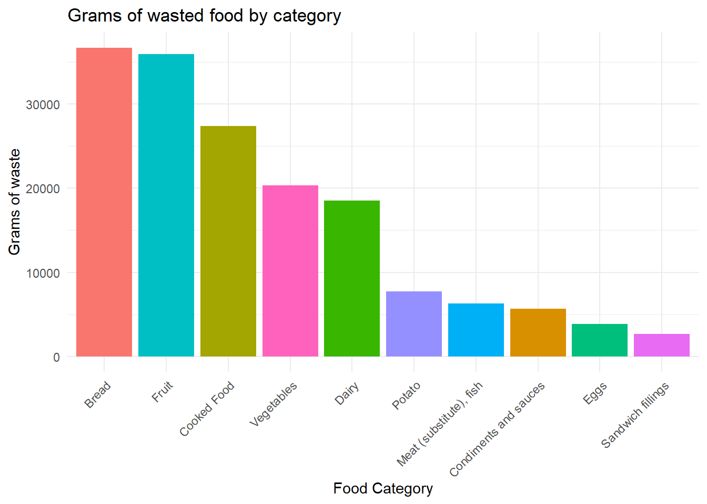

| Total (N=566) |
DE (N=66) |
EL (N=92) |
EN-GB (N=158) |
ES-ES (N=91) |
NL (N=82) |
SV (N=77) |
|
|---|---|---|---|---|---|---|---|
| Gender | |||||||
| Male | 284 (50.2%) | 32 (48.5%) | 55 (59.8%) | 56 (35.4%) | 51 (56.0%) | 46 (56.1%) | 44 (57.1%) |
| Female | 268 (47.3%) | 33 (50.0%) | 33 (35.9%) | 101 (63.9%) | 37 (40.7%) | 33 (40.2%) | 31 (40.3%) |
| Non-binary/third-gender | 10 (1.8%) | 1 (1.5%) | 2 (2.2%) | 0 (0%) | 3 (3.3%) | 3 (3.7%) | 1 (1.3%) |
| Prefer not to say | 4 (0.7%) | 0 (0%) | 2 (2.2%) | 1 (0.6%) | 0 (0%) | 0 (0%) | 1 (1.3%) |
| Age | |||||||
| Mean (SD) | 35.6 (11.8) | 30.7 (10.0) | 34.7 (11.0) | 38.9 (13.6) | 38.0 (11.0) | 32.1 (8.85) | 35.3 (11.2) |
| Median [Min, Max] | 33.0 [18.0, 78.0] | 28.5 [18.0, 69.0] | 33.5 [20.0, 67.0] | 36.0 [19.0, 78.0] | 35.0 [21.0, 74.0] | 29.0 [19.0, 67.0] | 32.0 [19.0, 67.0] |
| How many adults are part of your household? (aged 18 and older) | |||||||
| Mean (SD) | 2.13 (1.07) | 1.98 (0.969) | 2.32 (1.07) | 2.13 (1.31) | 2.26 (0.929) | 1.98 (0.860) | 2.00 (0.918) |
| Median [Min, Max] | 2.00 [0, 13.0] | 2.00 [0, 5.00] | 2.00 [0, 6.00] | 2.00 [0, 13.0] | 2.00 [1.00, 5.00] | 2.00 [1.00, 4.00] | 2.00 [0, 4.00] |
| How many children are part of your household? (aged under 18) | |||||||
| Mean (SD) | 0.385 (0.751) | 0.258 (0.640) | 0.374 (0.770) | 0.459 (0.836) | 0.495 (0.808) | 0.280 (0.614) | 0.338 (0.681) |
| Median [Min, Max] | 0 [0, 4.00] | 0 [0, 2.00] | 0 [0, 3.00] | 0 [0, 4.00] | 0 [0, 3.00] | 0 [0, 3.00] | 0 [0, 3.00] |
| Missing | 2 (0.4%) | 0 (0%) | 1 (1.1%) | 1 (0.6%) | 0 (0%) | 0 (0%) | 0 (0%) |
| Highest education level | |||||||
| No formal education | 0 (0%) | 0 (0%) | 0 (0%) | 0 (0%) | 0 (0%) | 0 (0%) | 0 (0%) |
| Primary education | 8 (1.4%) | 2 (3.0%) | 0 (0%) | 2 (1.3%) | 0 (0%) | 0 (0%) | 4 (5.2%) |
| Secondary education (GCSE) | 64 (11.3%) | 3 (4.5%) | 11 (12.0%) | 18 (11.4%) | 10 (11.0%) | 5 (6.1%) | 17 (22.1%) |
| College or vocational qualifications (e.g. BTEC, NVQ) | 89 (15.7%) | 28 (42.4%) | 12 (13.0%) | 11 (7.0%) | 10 (11.0%) | 13 (15.9%) | 15 (19.5%) |
| A-levels or equivalent | 55 (9.7%) | 2 (3.0%) | 8 (8.7%) | 11 (7.0%) | 2 (2.2%) | 27 (32.9%) | 5 (6.5%) |
| Bachelor's degree or equivalent | 206 (36.4%) | 18 (27.3%) | 40 (43.5%) | 72 (45.6%) | 39 (42.9%) | 18 (22.0%) | 19 (24.7%) |
| Master's degree or equivalent | 127 (22.4%) | 10 (15.2%) | 19 (20.7%) | 37 (23.4%) | 28 (30.8%) | 18 (22.0%) | 15 (19.5%) |
| Doctorate or equivalent | 17 (3.0%) | 3 (4.5%) | 2 (2.2%) | 7 (4.4%) | 2 (2.2%) | 1 (1.2%) | 2 (2.6%) |
| Employment status | |||||||
| Employed full-time | 262 (46.3%) | 28 (42.4%) | 53 (57.6%) | 64 (40.5%) | 50 (54.9%) | 31 (37.8%) | 36 (46.8%) |
| Employed part-time | 89 (15.7%) | 10 (15.2%) | 8 (8.7%) | 33 (20.9%) | 11 (12.1%) | 18 (22.0%) | 9 (11.7%) |
| Self employed | 47 (8.3%) | 5 (7.6%) | 5 (5.4%) | 12 (7.6%) | 10 (11.0%) | 9 (11.0%) | 6 (7.8%) |
| Unemployed looking for work | 39 (6.9%) | 2 (3.0%) | 4 (4.3%) | 12 (7.6%) | 8 (8.8%) | 6 (7.3%) | 7 (9.1%) |
| Unemployed not looking for work | 16 (2.8%) | 2 (3.0%) | 4 (4.3%) | 6 (3.8%) | 2 (2.2%) | 1 (1.2%) | 1 (1.3%) |
| Retired | 20 (3.5%) | 1 (1.5%) | 2 (2.2%) | 12 (7.6%) | 1 (1.1%) | 1 (1.2%) | 3 (3.9%) |
| Student | 76 (13.4%) | 18 (27.3%) | 13 (14.1%) | 11 (7.0%) | 8 (8.8%) | 14 (17.1%) | 12 (15.6%) |
| Inability to work | 11 (1.9%) | 0 (0%) | 2 (2.2%) | 6 (3.8%) | 0 (0%) | 1 (1.2%) | 2 (2.6%) |
| Other | 4 (0.7%) | 0 (0%) | 1 (1.1%) | 2 (1.3%) | 0 (0%) | 1 (1.2%) | 0 (0%) |
| Missing | 2 (0.4%) | 0 (0%) | 0 (0%) | 0 (0%) | 1 (1.1%) | 0 (0%) | 1 (1.3%) |
| Net monthly household income | |||||||
| Less than €1,000 | 67 (11.8%) | 6 (9.1%) | 19 (20.7%) | 15 (9.5%) | 11 (12.1%) | 12 (14.6%) | 4 (5.2%) |
| €1,000 - €1,999 | 130 (23.0%) | 10 (15.2%) | 40 (43.5%) | 28 (17.7%) | 23 (25.3%) | 15 (18.3%) | 14 (18.2%) |
| €2,000 - €2,999 | 125 (22.1%) | 12 (18.2%) | 15 (16.3%) | 40 (25.3%) | 25 (27.5%) | 21 (25.6%) | 12 (15.6%) |
| €3,000 - €3,999 | 98 (17.3%) | 18 (27.3%) | 7 (7.6%) | 30 (19.0%) | 18 (19.8%) | 10 (12.2%) | 15 (19.5%) |
| €4,000 - €4,999 | 45 (8.0%) | 8 (12.1%) | 1 (1.1%) | 11 (7.0%) | 3 (3.3%) | 14 (17.1%) | 8 (10.4%) |
| €5,000 - €5,999 | 31 (5.5%) | 2 (3.0%) | 1 (1.1%) | 8 (5.1%) | 4 (4.4%) | 5 (6.1%) | 11 (14.3%) |
| €6,000 - €6,999 | 20 (3.5%) | 4 (6.1%) | 1 (1.1%) | 5 (3.2%) | 3 (3.3%) | 2 (2.4%) | 5 (6.5%) |
| €7,000 - €7,999 | 9 (1.6%) | 0 (0%) | 0 (0%) | 4 (2.5%) | 0 (0%) | 0 (0%) | 5 (6.5%) |
| €8,000 - €8,999 | 6 (1.1%) | 1 (1.5%) | 1 (1.1%) | 0 (0%) | 2 (2.2%) | 0 (0%) | 2 (2.6%) |
| €9,000 - €9,999 | 5 (0.9%) | 1 (1.5%) | 1 (1.1%) | 2 (1.3%) | 1 (1.1%) | 0 (0%) | 0 (0%) |
| €10,000 - €14,999 | 10 (1.8%) | 3 (4.5%) | 3 (3.3%) | 2 (1.3%) | 0 (0%) | 2 (2.4%) | 0 (0%) |
| €15,000 or more | 18 (3.2%) | 1 (1.5%) | 3 (3.3%) | 12 (7.6%) | 1 (1.1%) | 1 (1.2%) | 0 (0%) |
| Missing | 2 (0.4%) | 0 (0%) | 0 (0%) | 1 (0.6%) | 0 (0%) | 0 (0%) | 1 (1.3%) |
| fw_total | |||||||
| Mean (SD) | 292 (393) | 269 (330) | 366 (444) | 287 (379) | 255 (395) | 257 (426) | 311 (363) |
| Median [Min, Max] | 150 [0, 3020] | 150 [0, 1710] | 230 [0, 2430] | 130 [0, 2170] | 150 [0, 2530] | 125 [0, 3020] | 185 [0, 1680] |
COM-B Food Waste Determinants
Below is some preliminary analysis of the data acquired from the questionnaire of COM-B determinants, habits and generated food waste.
Sample characteristics
Food waste descriptives
Grams of wasted food by category
#|label: FW grams
#|echo: false
fw_num <- df %>%
select(Q14:Q15)
fw_summ_num <- fw_num %>%
summarise(across(everything(), ~sum(., na.rm=TRUE)))
amount_food_label <- data.frame(
Variable = c("Q14", "Q3...88", "Q4...89", "Q5...90", "Q8...91", "Q9", "Q10", "Q12", "Q13", "Q15"),
Label = c(
"Cooked Food", "Vegetables", "Fruit", "Potato",
"Meat (substitute), fish", "Sandwich fillings", "Bread",
"Dairy", "Eggs", "Condiments and sauces"))
fw_total_long <- pivot_longer(fw_summ_num, everything(), names_to = "Variable", values_to = "Value") %>%
left_join(amount_food_label, by="Variable")
ggplot(data = fw_total_long, aes(x = reorder(Label, -Value), y = Value, fill = Label)) +
geom_bar(stat = "identity") +
labs(title = "Grams of wasted food by category", x = "Food Category", y = "Grams of waste") +
theme_minimal() +
theme(axis.text.x = element_text(angle = 45, hjust = 1))+
guides(fill="none")
Scale reliability
kable(list(
df %>%
select(ref_mot_1_1:ref_mot_2_7) %>%
cor(use="pairwise.complete.obs"),
df %>%
select(aut_mot_1_1:aut_mot_1_4) %>%
cor(use="pairwise.complete.obs")), digits=2)
|
|